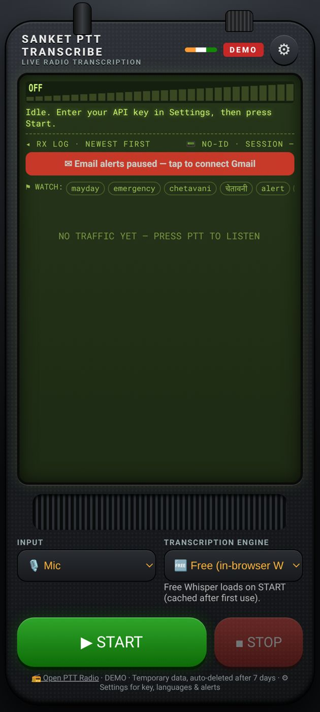
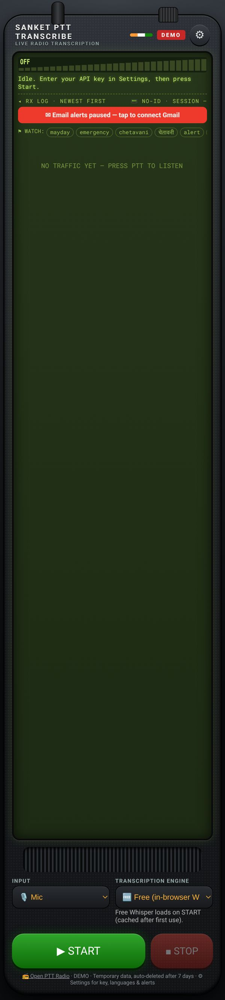

Sanket Transcribe — User Guide
Live radio transcription for police and emergency departments · Android app and web
Web app: https://vibhvesh.github.io/sanketptt/transcribe/
Android app (APK): https://github.com/vibhvesh/sanketptt/releases/download/v1.0-android/Sanket_Transcribe.apk
Pilot / demonstration service. Do not send sensitive information.
1. What it does
Sanket Transcribe listens to a Sanket PTT channel, or the phone's microphone, and turns every transmission into text. It can translate, raise keyword alerts and export clips. It joins as a listener and never transmits.

2. Install
Android
- Open the APK link above in the phone's browser and tap the downloaded file.
- If asked, allow Install unknown apps for the browser, then tap Install.
- If Play Protect warns, choose Install anyway, then tap Open.
- Allow Microphone and Notifications when asked.
Web: open the web link in Chrome and add it to the home screen.
3. Start transcribing
- Under INPUT choose Web page / PTT radio to monitor a channel, or Mic for the local microphone.
- For a channel, paste the channel link in PTT LINK, for example
https://vibhvesh.github.io/sanketptt/?ch=unit-name.
- Under TRANSCRIPTION ENGINE choose Free (in-browser Whisper). No key is needed. The model (about 79 MB) downloads on first use, so start it once on good Wi-Fi. ElevenLabs is optional and needs an API key.
- Tap ▶ START. Tap ■ STOP to finish.
4. Read the log
- Each transmission becomes a clip in the RX log, newest first, with its text and translation.
- Words in the WATCH list are highlighted and raise the alerts you turned on.
- Download one clip with ⬇ Download, or everything with ⬇ Download all (.zip) at the end of the shift.

5. Settings (⚙)
- Source / Translate: spoken language and the language to translate into.
- Keyword alerts: words to watch, separated by commas or new lines. Turn on Beep + vibrate if needed.
- Email alerts: tap Connect Gmail for alerts to email a chosen address, with the audio attached, when a keyword is heard.
- Mic squelch: set Hang time and Threshold margin; tap Recalibrate squelch if background noise changes.
- Station / device: device ID, location (or Use current location) and a place label.
- ElevenLabs key: stored only on this device (Save key / Forget key).
6. Always on (Android)
- The app keeps running when locked and shows a "staying on" notification.
- Keep the phone on charge and set battery mode to Unrestricted.
- Updates arrive automatically. Close and reopen the app to refresh.
7. Troubleshooting
| Problem |
Fix |
| Stuck on "loading model" |
Use good Wi-Fi for the first start; it is cached afterwards. |
| No text appears |
Check the PTT link and the channel name after ?ch=; tap START. |
| Mic picks up noise |
Tap Recalibrate squelch or raise the threshold margin. |
| "Email alerts paused" |
Tap the red banner and connect Gmail again. |
| Stops when locked |
Set battery to Unrestricted. |
8. Support
Akshat Singh · akshatsingh@canberravision.com